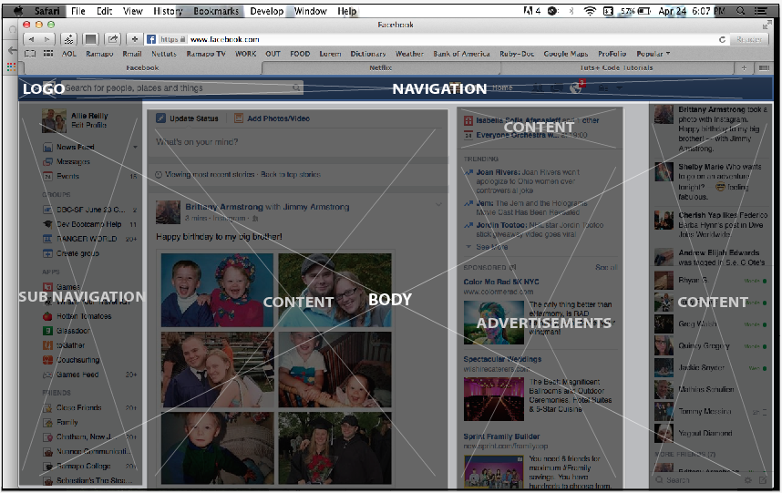
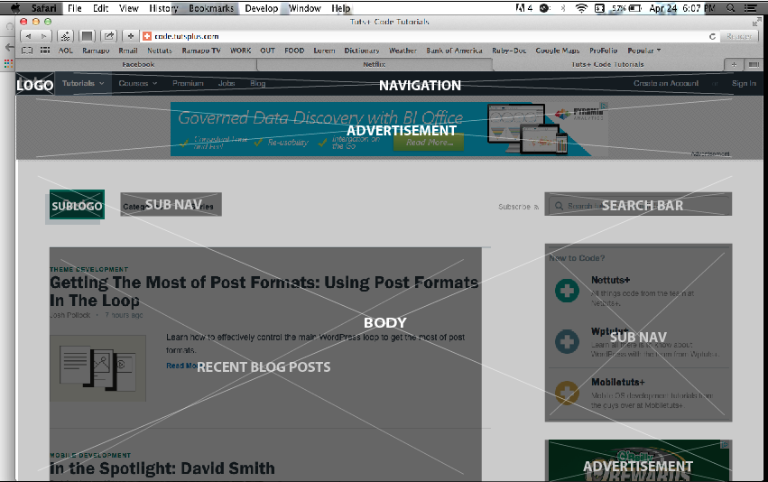
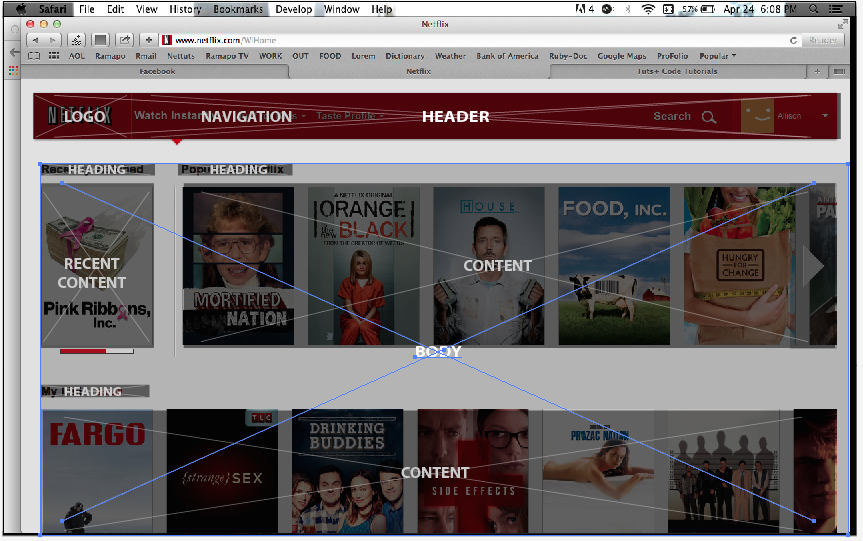

Facebook is easy to navigate, anyone can use it. It is the most popular website for social networking. Your eye is first drawn to the news feed.
This website has amazing tutorials. I love how a lot of the tutorials are in a video form, so I can watch what the teacher does and work along. This website is also easy to navigate. There are different sites for different purposes. Web design, photoshop, ect. Then there are categories in the nav to narrow your search. You can also just type in the seach bar what you are looking for.
Great website for watching movies and tv shows. Decently easy to navigate. They make their main page very simple, with few navigation items. Sometimes you need to dig deep to find what you are looking for.
